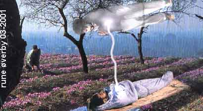
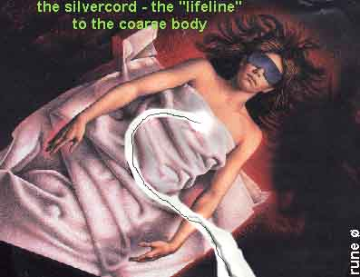
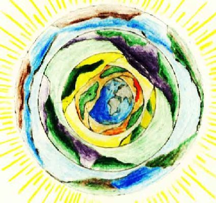

From T.LOBSANG RAMPA's book:"Chapters of life " - part 2 (some words are translated to Norwegian and there MAY BE some wordmistakes here because this is scanned from the book. Some headlines are added)In this part we start with Rampas analyse of a poem written by Milrepa and Rampa says … Let us now consider the poem 'I Fear Not' by that great man Milarepa. Milarepa wrote that the initiated may know certain things. Here is an inkling (anelse) into the hidden meanings: in fear of death I built a house And my house is a house of the void of truth. Now I fear not death. The meaning of that has been variously translated and mistranslated. Actually, according to esoteric beliefs, it can be taken as meaning that even on other planes of existence one cannot stand still on a tight - rope, one must go forward or fall, one must progress upwards or one must slip backwards. It is necessary at all times to keep in mind that although here we are upon Earth, yet when we die we are reborn into another stage of existence. When we finish with what we might term the Earth Stage of existence we go on to another Round where there are different abilities, different standards. For example, upon this particular cycle of lives we are given so many senses. When we go to the next stage we will have more senses, more abilities, and so on. But we move up, never backwards unless it is by our own lack of energy. So, in fear of death in the astral plane, I built a body, and my body had the emptiness of truth. With truth I fear not death. In other words, we know that when we die to one life we go on to the next. There is no such thing as permanent death, death is rebirth. I want to tell you this in absolute sincerity; because of very special training I have been able to visit other planes of existence normally inaccessible to one, a dweller on this plane. Special precautions have to be taken by those who guide one, of course, because one's vibrations - and we are only vibrations - cannot, unaided, speed up to make it possible for us to reach those higher planes. The experience was quite painful, it was like a blinding light, it was like passing through white - hot flames, yet I was shielded, protected. I found that on a higher plane I was of about the same standard as would be a slug (kjeltring) on this Earth compared to a high human intelligence. The greatest scientists of this Earth would find that they were no higher than that slug upon elevated planes. We have to progress all the time, and all the time, at the end of every life, we die, so called, so that we can progress upwards. Think of a caterpiliar(sommerfugllarve); a caterpillar is a creature which crawls about, then apparently it dies and becomes a butterfly which moves in a different element, which moves in air instead of crawling about on the ground. Take the classic example of a dragonfly. From out of some stagnant pond painfully crawls some lowly worm, some grub. It crawls slowly up, perhaps, a rush or a projecting branch. It climbs up, and takes a fierce, tenacious hold. Then there is no more movement, the creature dies, it seems to decay. Eventually from the dead husk there comes a little plop and the dead shell splits. From it emerges the dragonfly, limp, bedraggled. It spreads its wings, soon they become firm and iridescent. Then, with the sunlight upon it, the dragonfly rises up into the air and soars away. Now, isn't that really like humanity? The human body, something like a worm you will agree, dies; from the dead husk emerges something which soars upwards into new life. That is what I like so much about dragonflies, they are a promise of eternal life, they are a promise that there Is more than just this miserable flesh body. But I for one do not need promises, because I have experienced the actuality. (and it has shown so long time after his books was written - that experiences from hospitals, from "near-death-searching", etc. - has very strong indicated that Rampa really described the actual reality. R.Ø.remark.) If we were to continue with 'I Fear Not' we might go to: In fear of hunger I sought food And my food is the food of meditation upon truth. Now I fear not hunger. That, of course, means spiritual hunger, not physical but spiritual. If a person is in doubt he just doesn't know what to do, where to go to obtain knowledge. A person in doubt is a frustrated person, an unhappy, person. In fear of spiritual hunger I sought knowledge, and I meditated upon truth, and now knowing the truth I fear not hunger.' I say to you that even in these humble little chapters you can learn much, you can have seeds of knowledge planted within you. A seed is a small thing, but from a small seed can grow a mighty tree. I am trying to plant a seed - I am trying to light a candle in the darkness. Centuries ago all mankind had knowledge such as this, but certain elements of mankind abused the knowledge, and so there came the Dark Ages when the candles of learning throughout the world were extinguished, when Man burned books of knowledge, and sank for a time into abysmal ignorance, when Man was riddled with superstition. But now we are coming to a new era, to a new stage, wherein Man is going to have additional powers. I may become unpopular when I say almost in a whisper, atom bomb fallout may not be altogether the harmful thing which it is so often supposed to be. Let us digress from poetry for a moment to get down to reality: Mankind throughout the centuries has been deteriorating (forverret). If we want to get prize cattle, or prize animals, we do not let them mate indiscriminately and breed unfavourable strains. The animals are carefully picked and bred for quality, possibly for some particular quality. If we have trees, fruit trees, we can carefully tend those trees and graft them so that we get bigger and better fruit, or fruit having a special flavour. But let us neglect these animals, let them run wild, let us desert our fruit groves and let them revert to nature, then all the good training they have had reverts back and we get inferior fruit, inferior animals. Think, for instance, of a most beautiful apple, which can revert back to a crab apple (villeple). Humans are like crab apples, humans breed indiscriminately, and people with the least desirable traits usually have the most children, while people who have knowledge or characters which could actually in - crease the quality of the human race have no children at all. Often it is because of excessive taxation, or excessive import duties. So possibly Old Mother Nature, who must know a thing or two after all these years, might see a different way of increasing the value of the human race. Give this a thought; possibly Old Mother Nature has made it so that a few strange radiations are let loose to produce mutations. Not all mutations are bad, you know. We get, for instance, a germ, a family of germs. They are treated by penicillin, many get killed off, but others change, they become immune to penicillin. Later they become not just immune, but they thrive on penicillin. How do we know that humans are not doing the same? Always we have to move upwards, always we have to progress, and it is my firm belief, which also is the belief of Eastern thought, that everyone has to know all these things before they can pass on to higher stages of evolution. In fear of error 1 sought a Path And my Path is the Path of transcendent union. Now I fear not error. In other words - I did not know which way to move, I did not know where my Path lay, so I sought knowledge from Higher Worlds. I got that knowledge and now I do not fear that I am making a mistake of my life. I am a sage who possesses in plentitude The manifold treasures of desire, And wherever 1 dwell I am happy. Again, I am wise that I have obtained from other sources knowledge of what is to be, knowing what one is required to know. Thus, knowing that life upon Earth is, in the infinity of Man's spiritual lifetime, just a flickering of an eyelid, I can be contented wherever I dwell. Thus, I fear not. Milarepa was a great sage, he was a man who retired into a mountain cave. People came to consult him and to study with him. Let me make it clear that those who came to study with him, attended to his body wants, cleaned his cave, looked after his clothing, prepared his food, ran messages. So many people of the West think, 'Oh, all knowledge should be free, you must not charge to teach people anything.' But, of course, that is just ignorance, asinine, crass ignorance. That is said by people with little knowledge and little knowledge is a dangerous thing indeed. Anything that is worth having is worth working for. Milarepa taught that one must be content, be content with knowledge. Milarepa taught that the body was as a monastery, and the monks within the monastery were the different powers and abilities of the body and of the mind. For the bodily substance is the palace of divinity. Again, the body substance, the flesh, or clay, or whatever you want to call your body, is the house wherein dwells the Overself or the soul who is here upon this Earth to gain experience of mundane things. In higher stages of existence one cannot meet those whom one heartily dislikes. The obvious answer is to come to Earth where you meet all of them all the time! You just think - if you really think with an open mind you will find that you dislike an amazing number of people, and you are sure that an even greater number of people dislike you. If you are honest you will agree that that is right. If you go to work you will be sure that somebody is trying to cut you out of your job, somebody is trying to deny you promotion, somebody has a spite against you. That's so, isn't it Well, the Overself has to come down to Earth to get those obnoxious (ubehagelige) experiences. Thus it is that the body is a fairly durable contraption (innretning), it houses the soul against undue shocks. e must be content with the mind, because within the mind one can store and sort out knowledge of the truth, and until you, know the truth, you cannot know holiness, holiness not in the sanctimonious sense, but in the true sense which recognises that the Overself is the controller of the body, and the body is merely a puppet. Milarepa goes on: Raging enemies be content to (sky) For enmity (fiendeskap) is a traveller upon the wrong Fath. That means you must not have hatred or enmity for anyone because if you feel strong hatred for anyone it means that you are upon the wrong Path. You cannot stand still on a tight - rope, you either go forward or you go back because actually, you know, on our spiritual tight - rope you cannot fall off and be destroyed. Often in religions, in all religions, there is talk of eternal damnation, talk of eternal torment. Don't believe it, don't believe it! These things were said by the priests of old in the same way that the mother might tell her child, 'Now you be quiet or I'll tell your father. He'll take a stick to you!' In the days of old people were very much like children. They perhaps lacked reasoning power, which has developed throughout the ages, often they had to be threatened in order to help them. You might find that little Joe or Charlie won't eat his breakfast, you might say - if you are foolish - 'Now you eat it up this moment or I'll call the policeman for you!' I have known that happen many times. Well, eventually little Joe or little Charlie thinks that all policemen are fiends, he thinks that a policeman is always ready to pounce upon him, take him off to jail, and do all kinds of unmentionable things to him for ever and ever and a bit longer. So in the days gone by the priest used to say, 'Ah! Devils will get at you, Devils will prod you in various unmentionable places, they will give you, in fact, the devil of a time.' Don't believe it! There is a God, it does not matter what you are going to call that God, there is a God, a God of good, and no person is ever called upon to suffer beyond his limits. Some of us, though, have memories of other things. Some of us, as in my own case, have actual knowledge, not just memories, and some people without the memories and without the knowledge are called upon to suffer more than they need to suffer because they will not learn by lessons of the past. We live upon this Earth, we are, as you know, about nine - tenths subconscious, one - tenth of us only is conscious, or at least that is the popular figure. By the sight of some of the people on certain other continents one would doubt that people are even one4enth conscious! But I want to say something here about other work, which is done by the Overself. The Overself, of course, is ten-tenths conscious. It has to be otherwise the human subconscious could not be nine-tenths awake. The Overself is not confined to dealing with one body alone, there are different systems of utilising the energies of the Overself, and let us just briefly look at them. Some people come as a member of a group, for example, a young girl may be upon the Earth and she may be quite lost and inept without the company of her brothers, her sisters, and her parents. These people, they seem to function only when they are all together. Death makes a terrific gap, while when one gets married, then the married person is always running back to the family. These people may be as puppets all controlled by the same Overself. Twins or quads often also are controlled by the same Overself. It seems as if the leaders of other Planes know that this particular round of existence is nearly at an end and another will start, and so they seem to be bringing people here to work in groups under the control of one Overself to each group, in much the same way as a Communistic dictatorship has cells of so many people under the control of one supervisor, and all the supervisors are under the control of a senior supervisor, and so on. One has often seen groups of birds, perhaps fifty birds, wheeling and turning in unison as if under the command of one person. Well, that is as it should be because these birds are all controlled by one person, in just the same way as a colony of ants is controlled by one Overself, or a hive of bees is controlled by one Overself. People who are more enlightened, more evolved, have a different system, and this is going to make you think. So, let us take it slowly and briefly because actually all we have to bother about is how we are managing on this Earth - let the other worlds take care of themselves until we can get round to them. There are many different worlds like the Earth, not in the same - for want of a better word I can only call - 'time'. But perhaps we should do better if we used a musical term - harmonics. We can have a musical note, a pure note, but then we can have harmonics to the note. The harmonics are all fundamentals of the original note. In much the same way there is this Earth, which perhaps we should call Earth D, then there are Earths C, B, A, and E, F, G, for instance. These are similar Earths, similar worlds, and they are called parallel universes or parallel worlds. An Overself who has evolved and who realises that controlling just one puny little Earth - body is time consuming, and sufficiently educational, can have a puppet on each of several worlds. So that in world A, for example, little Bennie can be a genius, but in world F little Freddie can be a moron(psykisk utviklingshemmet person). In that way the Overself can see two sides of the coin at once, and can gain experience on both ends of the scale. A really experienced Overself might have nine different puppets, and that is the same as living nine different lives, which speeds up evolution quite a bit. But this subject has already been dealt with more fully in Chapter Two. As was stated at the beginning of this chapter, poetry or verse or a definite rhythm - pattern is often used to drive a matter deeply into one's subconscious. Now we are going to have an example of the type of thing, which the Egyptians used to do. Unfortunately it loses a lot of its power by being translated into English. In the original Egyptian the words swayed rhythmically and achieved the desired purpose, but just think for yourself, if you get a piece of poetry and you translate it from English or Spanish - into, let us say, German, you get the sounds all wrong, you get the balance all wrong, and so it does not have the same effect. In fact, some poems cannot be translated at all into another language, so this 'Confession to Maat' is not as good as it would be in Egyptian. This is a temple confession which was said in the Chamber of Maat in the Egyptian Temple of Initiation. It is as written in the Egyptian Book of the Dead, it was actually an invocation. Maat, you may remember, is the Egyptian word meaning 'Truth'. So the Chamber of Maat became the Chamber, or Temple, of Truth. Here is the Confession to Maat, which should be repeated every night before one goes to sleep. If one repeats this as did the Egyptians, then it leads one to a much purer life. Try it and see! THE CONFESSION TO MAAT Homage to Thee (deg), Oh Great God, Thou Master of all Truth, I have come to Thee, Oh my God, and have brought myself hither that I may become conscious of Thy decrees. I know Thee and am attuned with Thee and Thy two and forty laws which exist with Thee in this Chamber of Maat. (sannhetens kammer) In Truth I come into Thy Attunement, and I have brought Maat in my mind and Soul. I have destroyed wickedness for Thee. I have not done evil to mankind. I have not oppressed the members of my family. I have not wrought evil place of right and Truth. I have had no intimacy with worthless men. I have not demanded first consideration. I have not decreed that excessive labour be performed for me. I have not brought forward my name for exaltation to honours. I have not defrauded the oppressed of Property. I have made no man suffer hunger. I have made no one to weep. I have caused no pain to be inflicted upon man or animal. I have not defrauded the Temple of their oblations. I have not diminished from the bushel. I have not filched away land. I have not encroached upon the fields of others. I have not added to the weights of the scales to cheat the seller and I have not misread the pointer of the scales to cheat the buyer. I have not kept milk from the mouths of children. I have not turned back the water at the time it should flow. I have not extinguished the fire when it should burn. I have not repulsed God in His Manifestation. AFFIRMATION I am Pure! I am Pure! I am Pure! My purity is the purity of the Divinity of he Holy Temple. THEREFORE EVIL SHALL NOT BEFALL ME IN THIS WORLD, BECAUSE I, EVEN I, KNOW THE LAWS OF GOD WHICH ARE GOD. There are, as. previously stated, occasions when prose in special form is used to drive into the subconsciousness a special message. Here is a Prayer which I composed, and which you should repeat three times each morning: To MY OVERSELF I PRAY Let me this day, living my life day by day in the manner prescribed, control and direct my imagination. Let me this day, living my life day by day in the manner prescribed, control my desires and my thoughts that I be purified thereby. Let me this day, and all days, keep my imagination and my thoughts directed firmly upon the task which has to be accomplished, that success may come thereby. I will at all times live my life day by day, controlling imagination and thought.
You should also have a Prayer to be said at night, three times each night before going to sleep. Here, then, is a specially composed Prayer (composed by me) which will instil discipline into your subconsciousness by night: A PRAYER Keep me free from evil thoughts. Keep me free from the blackness of despair. At the time of my misery shine a light into the darkness that enshrouds me. Let my every thought be good and clean. Let my every action be for the good of others. Let me be positive in my thoughts that my mind may be strengthened therefrom. I am the Master of my Destiny. As I think today, so am I tomorrow. Let me therefore avoid all evil thoughts. Let me avoid all thoughts which cause distress to others. Let my Spirit arise within me that I may easily succeed in the task that lies ahead. I am the Master of my Destiny. So be it.
Spiritual beeings with and without souls - ELEMENTALS AND CONTACT TO THE OTHER SIDE In chapter 6 he talks about healers and others that claim "special properties" or talents in contacting the other side and he make some warnings: ….. how often do we hear of some poor little man, so lonely, so forgotten by the world, that he has to say, 'Ah, I have read a book about occultism. I will now set up as a great Teacher and a Master.' So he goes to work by day, perhaps canvassing (stemmeverver) from door to, door, or perhaps being a meek little man under a domineering employer, and by night he sets off to his back room, puts on a mysterious look, flaps his eyebrows up and down, sights down the side of his nose, makes weird (underlige) sighs and groans and perhaps also does a stage trick or two, says how wonderfully he can do astral travelling. Actually he has probably had too much supper or bad cheese, or something, and he has had a nightmare. Well, that little man is a real pest, he is a real danger to occultism and to himself. I am going to tell you that all these crackpots who put on stage shows and call it occultism - are going to have to pay time after time until they learn better, they are going to have to come back to this Earth, and that should be a threat enough to put anyone off. In India there is a sect of people called the Fakirs. They pose as holy men, they travel about India and no attractive woman is safe from them, but they put on stage shows, they put on tricks. Well I for one, if I want to see a conjuring show, I would rather pay and go to a good variety theatre. I don't want to see a dirty little man squatting on the ground trying to hypnotise a whole group of people, that doesn't prove anything spiritual to me. It proves, instead, that the person has not even the first conception of spiritualism. The Indian rope trick is just a simple matter of hypnotism. I am going to tell you, though, quite definitely that the real Masters who never prove anything to satisfy the idle curiosity seekers - can actually do the so-called Indian rope trick, by utilising natural powers, and that does not employ hypnotism. I will tell you quite truthfully that I and many others have seen levitation. Levitation is a very real thing indeed, and it is not at all mysterious. It is a matter of reversing magnetic currents. If you get hold of two magnets, two bar magnets for preference, if you hold them one in each hand and bring them together, they may jump together with a loud metallic clang, often pinching a bit of flesh in - between! But if you reverse the direction of just one, that is if you take the one in your right hand, and you put the South Pole where the North Pole was before and you try to bring these two magnets together, you will find that they make quite strenuous efforts to evade each other, they oppose each other, they have no magnetic attraction to each other, they have repulsion instead. Another thing: One can have a form of induction coil connected to a battery or to the mains, and over a shaft which projects upwards one can drop an aluminium ring. If the current is switched on, the ring apparently defies gravity and floats in the air. If anyone doubts the truth of this, well, they should consult some scientific magazine or write to the United States for a demonstration kit. But let us get back to what we are discussing seriously. Levitation is a method of altering our own magnetic attraction so that we do not weigh so much. In England about sixty or 50 years ago there was a young man called Home; he gave an actual demonstration of levitation in an English country house. Some of the world's foremost scientists witnessed the demonstration, but because the demonstration disproved the laws which those scientists had formulated they would not give an unbiased report. In Tibet and China - China before the Communists made a commotion there, that is - and Japan, before the United States soldiers made a commotion there as well, one saw a lot of levitation and similar, things. But these things were never done as a circus turn, but only for the science of raising the Kundalini in sincere and genuine students. Let us, then, be true occultists and let us very, very seriously suspect anyone who offers to give a demonstration of balancing on one finger or any of those really crackpotted asinities, which the person with no confidence in himself and no occult powers at all tries to delude the unwary with. The true occultist never, never gives proof of his abilities unless there is a completely overriding good reason for it. I should also include in this people like "Dinah Dripdry", the back - street clairvoyant. This poor woman, perhaps for several hours a day, scrubs floors carrying around a bucket and a mop. Then at the end of her work she trudges off home (there is usually a bus strike, anyway!), she trudges off home and gets herself done up in some really outlandish fashion. She sticks a colourful thing around herself, and then she wraps a sort of gaudy handkerchief around her head, which she thinks, looks like a turban. She has very dim lights in the room so the clients won't see how dirty it really is, then she is ready to start business. Frequently she has got hold of some sort of crystal from somewhere, often it is kept as a showpiece exposed to the sunlight so that people will see this thing and think what a wonderful woman she is when she is not scrubbing floors. Well, there is nothing that ruins a crystal more thoroughly than being exposed to sunlight, it kills the odonetic power of the crystal. Dinah Dripdry, then, has somehow lured a foolish client into her room. Usually she sits down opposite him, looks him up and down and gets him talking a bit. Most people are so fond of hearing their own voice that they tell all and a bit more. So Dinah Dripdry merely has to look in her crystal, seeing nothing but her own reflection, and repeat back in gloomy tones some of the things which her client has told her. Then she gets a reputation for being a great seeress. The client frequently doesn't remember having told her anything, and he parts with his money without a murmur! Dinah Dripdry can - not be a clairvoyant if she is doing it for money because that loses her the power even if she had it in the first case. No average clairvoyant is clairvoyant all the time through - out the twenty - four hours. A person may be highly clairvoyant at a most inconvenient time, but then when there is need for clairvoyance the person is not clairvoyant, and if you are doing it for money you cannot say, 'Oh this is one of my off - days, I don't feel able to tell you the truth today.' So people like Dinah Dripdry have to make their money, and when they cannot see anything in the crystal - which is all the time with them - then they have to make things up. You will have experiences of not being in top form all the tune. You may say, 'I don't know what's wrong with me, I can't concentrate today.' Well, in the same way with clairvoyance; you don't concentrate in clairvoyance, you do just the reverse, so that if a person is tensed up or too excited then that person cannot relax, and for the time being the clairvoyant ability falls off. The second rule is, for the sake of your own pocket book, never, never pay anything whatever to have your fortune told by a crystal gazer or a person like that, they cannot do it for money and if they try to put it on a commercial basis, then they just have - to 'make up' from time to time, and the more a person makes up things the more quickly they lose any dairvoyant ability which they might have possessed in the first case. Another thing which should be made clear now - is that no person can control the astral of another. You sometimes get an idiotic sort of woman who does a cackle of laughter, like a hen about to lay a particularly large egg, and says, 'Oh, I've got a hold on you, I met you in the astral last night and now I can control your astral.' If you ever meet a person like that the best thing is to call those white - coated attendants who carry the mentally afflicted off to a comfortably padded cell. No person can suffer any injury when in the astral. No person can be controlled by another person while in the astral. The only thing to be afraid of is of being afraid. Fear is like a corrosive acid on the mechanism of a thing like a watch. Fear corrodes, fear corrupts. So long as you are not afraid, nothing at all bad can happen to you. So again, if any idiotic crackpot claims to be able to control you, then you'd better send them off to be examined by a psychiatrist or call the police, it's time the police did something anyhow! It is not possible except under certain conditions and circumstances to hypnotise a person against that person's will. Of course those who have been trained in Tibet, and only in the Temple of the Inner Mysteries of Tibet, could do such a thing if they wanted to for a good reason, but every person who has been trained in the Inner Temple of Mysteries of Tibet has himself been hypnotically conditioned so that he cannot do anything of this type to harm anyone else, but only to help someone else, and even then only in very unusual circumstances. If someone starts gazing at you and trying to hypnotise you, then gaze straight back at the bridge of his nose between his eyes, gaze straight back, and if he doesn't know enough he will soon be hypnotised instead of you. You have nothing to fear whatever except of being afraid. Occultism is an ordinary thing just the same as breathing, or lifting a book, or taking a step. You can walk safely unless you are clumsy and careless, and then you can slip on a banana skin. Well that is your fault, not the fault of walking. Occultism is safer than walking because there are no banana skins in occultism. The only thing to be afraid of, I repeat, is of being afraid. Of course it's quite difficult trying to reason with people, quite difficult trying to explain a thing to a person, because there is a definite law that in any battle between the emotion and reason, emotion always wins no matter how great one's intellect, no matter how great one's reasoning power. If one gets really excited and enraged the emotion overrides the reason. A person lives in a tall apartment building nine floors high, if you like. These buildings have a flimsy iron railing at the edge of their balconies, a good push would probably knock the thing over, but emotion tells us that it is quite safe because there is a railing there and we experience no fear at all. But supposing that railing was removed, then we should have great fear of falling even if we stood in precisely the same position as we should have stood if the railing had been there. At all times, then, we should keep in mind that in any battle between emotion and reason, emotion always wins, and for that reason we should not let ourselves get unduly excited, in - stead we should try to get a step nearer to Nirvana which is the controlling of emotion so that no longer does it stop the workings of reason. We must realise that some of these little back - street people who have read a book or perhaps have just heard of the title of a book, are not necessarily the best teachers. The only person who is qualified to teach anything to do with the occult is the person who obviously knows. A person who has been trained at a reputable place. I, for instance, can and have produced papers showing that I have been trained and hold medical degrees of the University of Chungklng, and my papers describe me as a Lama of the Potala Monastery of Lhasa. Naturally, one does not produce such papers just for curiosity seekers or to settle bets as I have frequently been asked! Publishers have seen such papers and they testify to that in their Foreword to one or more of my books. One would not go to a quack doctor, one who would give us a 'bonk' on the head with a mallet in order to make us unconscious and so oblivious to pain, one would only go to a quail - fled doctor. In the same way, one should not go to a quack who has no real knowledge of the occult except some imaginary sounds in the head; all too often, as you know, voices in the head may even be a symptom of mental derangement. You should choose your occultist as soundly as you choose your physical doctor. When a person leaves this Earth they may be advanced people who have gone on to higher planes. In that case only a medium with very considerable power can make contact because in ordinary physical concepts those who have passed gone to a different time zone, and if you try to telephone Australia from England, then unless you know the time zone of your friend, you cannot get in touch, you may be trying to call in the middle of the night, for instance. But in our medium case we are trying to call someone who is already a few thousand "light years" into the future! Most times a medium who lacks experience will be deluded (narret) by those plausible Beings who are also known as elementals. Perhaps we should discuss elementals so that we may know something about the subject People have rather remarkable ideas about that order of Beings which we call elementals. Frequently they are confused with the souls of humans, but they are nothing at all like that. They mimic humans just the same as monkeys copy humans, and the average medium who cannot see into the astral will be led astray by elementals pretending to be humans. Elementals are not evil spirits either, they are merely the thought forms which have been generated by constant repetition. For example, if a person constantly gets drunk, then that person will have confused thoughts and his excess energy, being no longer under control, will run wild and will perhaps onjure up thoughts of pink elephants or spotted lizards, or something like that. These things are elementals. As we have said, each cycle of evolution is constituted by those leaving a cycle and those starting a cycle, so we get what is in effect a life - wave of living souls or Overselves, and each of these waves has its own contribution to evolution, it leaves its own pattern just the same as an Oxford man leaves a different pattern on civilisation to the Yale man, and the Borstal man leaves yet a different pattern. So when this life - wave goes on their memory remains as a. static force, and as there have been so many people concerned, the force is built up into what is in the astral plane a solid creature. These creatures which have been built up and left behind by succeeding wave - forms or cycles of evolution are solid creatures, but they lack 'the divine spark', they lack intelligence, and instead they are only able to mimic or reproduce things which have entered into their consciousness at some time. You can, if you try hard enough, teach a parrot (papegøye) to repeat a few words, it does not necessarily understand the words but the parrot is repeating a sonic pattern. In the same way, elementals repeat a cybernetic pattern. For those who are really interested in the subject, elementals are divided into many different types in much the same way as in humans - there are black people, brown people, yellow people, white people, etc. In the elemental groups there are four main types attached to the Earth astral plane, and that is how we get some of the 'qualities' of astrology. The astrologer will know of the Spirits of Air, the Spirits of Fire, the Spirits of Water, and the Spirits of Earth, for they are the four main types of elementals. The witchcraft (heksekunst-) people, or the alchemist, would refer to them as gnomes for one group, sylphs for the second group, salamanders for the third group, and for the last group undines. If you want to take it a bit farther beyond the astrologer and beyond the witches you can go on to the stage of the chemists, because you can say that the Earth group represent a solid in which all molecules adhere. After the solid - we have the liquid (water) in which molecules move freely. Next on our list is air, which also includes gases of various types, and in air the molecules repel each other. Finally, for our chemical correspondents, there is fire, and in fire molecules change or transmute into some other substance. The term 'elemental' is almost always reserved for those Beings who occupy a place in one of the groups just mentioned, but there are other groups such as nature Spirits. Nature spirits control the growth of trees and plants, and they help in the transmutation of organic compounds so that plants may be enriched and fertilised. These groups all have an Overself - Head, or if you prefer, an Oversoul; they are known as the Manu. The human tribe has a Manu, each country has a Manu, and nature spirits have a Manu, there is a Manu who controls and oversees the work of the tree spirits just as there is a Manu who controls the work of the rock spirits. In Egypt, many, many centuries ago, highly trained priests were able to get in contact with these Manus. For example, Bubastes, the cat God, the Manu of cats everywhere. We must have negative or we cannot have positive, so just as there are good spirits so also are there evil spirits, demons if you like. They are evil to us here, but on another plane of existence they may be good. If you are at all electrically inclined - this explanation might appeal to you; suppose you have a twelve - volt car battery; at the extreme (ytterpunktet) is the positive and at the other extreme is the negative. But now supposing that you connect another battery, six or twelve volt, in series on to this first battery, then the negative of the original battery will be as the positive of the second battery, and the negative of the second battery will be more negative than the negative of the first battery! All this, stated simply, is that everything is relative and to be compared with each othet. Thus we have evil here at present, but if we can find a worse world, then our evil would be as good on that world, and what is good on this world would be not very good at all on the higher world! *** A medium is a person who through some difference in brain structure is able to receive messages from another plane of existence in just the same way as a radio can receive messages which the unaided human ear cannot. A medium usually goes into a form of trance, either light or heavy - depending upon the medium, and during that trance the consciousness of the medium is suppressed so that another entity can operate the 'controls' and give utterance to certain thoughts in the form of words. Most mediums will have a spirit control from among those who have been kept upon the lower astral for some specific purpose. The spirit control, or Guide as many call it, acts as a policeman and prevents - in some cases - mischievous elementals from doing harm to the medium. The Overself of the medium has departed so as to give the Guide free rein, but the medium who is sitting in a chair or lying on a couch, will not be aware of anything at all. If you see that the medium is looking about taking too much interest in events, then you can be quite reasonably sure that you do not have a genuine medium. The whole point is that the medium should place his or her personality completely aside and function merely as a telephone. After all, if you are going to get a message from the other side of death you do not want the medium's interpretation, you want a clear unbiased statement, and the only way that one can obtain that clear unbiased statement, is to let the spirit communicator communicate without intetference from the medium. Again you should remember that when one gets in contact with what we might term the spints of the departed so that they may tell us of their experiences we merely listen to the accounts of their dreams in the other world, because the really evolved souls have gone on to a dimension which the average medium cannot possibly reach. It is only when one has a real Master that one can reach forward into time and call back a message from one of those very far - departed souls, and that is why it is so difficult to obtain really worthwhile statements from those who have passed over. Supposing we try to look into the matter of the average medium. Let us say that the woman has some gifts in mediumistic work and she can obtain rapport with people who have passed over, but let us remember that these people who have just passed over are still in the lower astral, they are in what we might term purgatory ("renseri" eller skjærsild), they are in the intermediate stage, they are in the waiting - room waiting for directions as to what to do and where to go. Suppose you look upon these people as patients in a hospital, because it is a fact that many of these people do have to undergo certain spirit therapy to overcome the shocks of their Earth experience. So let us say that we are in contact with one of these people who is as a patient in a hospital; the patient is in bed and thus his only knowledge of his surroundings is that limited to the small area visible from his bed, he cannot see the whole work of the hospital, and if he can see other scenery, then possibly it is only that which he can see from the window. Supposing you get a report from one of the Guides or some spirit whose special task is to assist those who are about to pass over or who have actually passed over. If they speak that is much the same as getting a report from some inexperienced little nurse ward-maid at the hospital, and not even if you can go to a lecture of the hospital committee - can you realise the full scope of what is going on, you can only make an evaluation by leaving the hospital and touring, as one might say, the town. When one leaves this world which we call Earth one goes to the lower astral, which the Bible terms purgatory, and that may, as we have stated, be regarded as a hospital for sick souls where they are cured of many of the shocks which they endured or sustained upon this crude, crude Earth. Unfortunately the lower astral would better be compared to a mental home, in which patients are received and their cases considered, just as a psychiatrist may sometimes discuss things with a patient so that he himself can state his faults and allments, so in the lower astral can the newly arrived soul see what he did wrong on the Earth and see what he has to do about it to atone. Then for a short time the soul rests and recuperates, and perhaps walks in pleasant parkland, all the time receiving medication and treatment to assist him or her to carry on with the next phase of existence. You will quite appreciate that people in the astral world are absolutely solid to each other. You upon this world can bump into a wall, but a 'ghost' would walk through that wall, yet in the astral and other planes the walls are quite solid to those occupants. From all this you can see that if you make a commotion and go from medium to medium and seance to seance trying to get in touch with one who has passed over, then you are causing considerable harm to that person. Think of it in this way; a loved one has been taken ill and has been taken to a mental home or some other form of hospital, suppose you keep on calling and pestering that person, then you impede that person's progress. The doctors cannot get his full attention be - cause you are meddling in his affairs, you are stopping treatment and causing considerable distress. When you try to get in touch with an entity who has gone beyond the lower astral, then you are interfering with a person who is trying to do a particular task. People who have left this world do not just sit about on clouds strumming harps and singing hymns, they have more work to do than they had upon this Earth! And if they are subject to continual distraction, then they cannot get on with their work. Suppose you call a very busy executive, or a research scientist, Or a surgeon who is doing a difficult operation, suppose you keep jerking at his coattails ("prikke på skulderen"), then you distract him and he cannot give attention to what he is doing. Mediums should never, never try to get in touch with the departed unless under very special conditions and with very special safeguards. Fortunately there is already a built - in safe - guard; many worthy mediums, believing absolutely in their own sincerity, merely contact elementals who are having quite a bit of fun! That is all right if you know you are contacting elementals, but if you know that much, why play with a gang of half - witted monkeys?
Also in this book, Rampa comes into the very important subject on death - and the death-process. This is from page 120 in this book. For reasons of their own, Western religions do not tell much about death, but after all, death is a very serious matter for all of us just as is birth, and it seems that death should logically follow the chapter about mediums because if no one died, mediums could not try to get in touch with them. So we are going to discuss death because, no matter who we are, death is something that comes to all of us just as does birth. But, you know, death is actually birth! Let us see how that comes about. A baby within its mother dies to that warm, comfortable life within, and reluctantly emerges into the cold, hard world without. Birth pangs (smerter)are death pangs, death to the old, birth into a new state. A person dies upon Earth and the pains of death are the pains of birth into a different state of existence. Most times death - death itself - is a quite painless process. Actually, as death approaches, Nature, in the shape of various metabolic changes, introduces a form of anaesthesia (bedøvelse) into the body system, anaesthesia which culls (samler) the actual perceptions while allowing the body reflexes to make certain movements which people think of as death pains. People actually associate pain and death, or if you prefer, death and pain, because in the majority of cases people who are grievously (alvorlig) ill die apparently in pain, but that pain, remember, is not the pain of death but the pain caused by the illness itself. Perhaps there is a cancer, something affecting body organs, grasping at nerve endings or eating them away. But let us remember that this pain is the pain of the illness, the pain of the complaint, not death itself. Death, the actual state of transition from this world to the next, the actual state of leaving this physical body, is a painless process because of the anaesthetical properties, which come to most bodies at the moment of death. Some of us know what it is to die and to remember everything, and to come back still remembering. In the process of dying we have a body which is ailing, functions are failing. But remember this, the functions are failing, that means the ability to perceive or apperceive or to comprehend pain impulses is failing also. We know that people sometimes give an impression of pain at dying, but this again is an illusion. The dying body is a body which has usually (except in the case of accident) reached the end of its endurance, it can go no more, the mechanism is failing, there is no longer the ability for metabolic processes to renew failing organisms. Eventually the heart stops, the breathing stops. Clinically a person is dead when no breath condenses on a mirror held before the lips; clinically and legally a person is dead when there is no longer a pulse or a heart - beat. People do not die on the instant, however. After the heart has ceased to beat and after the lungs have ceased to pump, the brain is the next to die. The brain cannot live long without its precious supply of oxygen, but even the brain does not die instantly, it takes minutes. There have been absolutely authenticated cases where people have been beheaded, and the head, severed from the body, has been held up for public inspection. The lips have continued to move and a lip reader can distinguish the words being formed. Obviously only a lip reader can interpret what is being said because there can be no speech when the neck has been cut and the supply of air from the lungs terminated. It is the air supply going past the vocal chords, which makes the sound. After the brain has died, after the brain is no longer capable of functioning through this lack of oxygen, the rest of the body dies slowly. Various organs die throughout a day or so. At the end of three days the body is just a lump of decomposing protoplasm, but the body does not matter, it is the immortal soul that matters - the Overself. But let us go back to the instant of clinical death. The body in this case is lying on a bed. The breathing has stopped. A clairvoyant who is present can see a cloud like a faint mist forming above the body. It streams from the body, usually from the navel, although various people have various - outlets for the Silver Cord. Gradually this cloud coalesces and becomes denser, its molecules are less dispersed. Gradually a shadowy shape forms above the body; as the process of death advances, the shape becomes more and more that of the body. Eventually as more organs fail, the cloud gets thicker and larger, taking at last the exact shape of the body above which it floats.
 The cord, which we call the Silver Cord, connects the physical body and the astral body, for the cloud is in fact the astral body. Gradually this cord thins until at the end it withers, fades away, and parts. Only then is the body really dead, only then has the real person flown off to another life, to another stage of evolution. Once that misty figure has gone, it does not matter at all what happens to the fleshy envelope, it can be cremated or buried, it does not matter which. It is perhaps opportune to disgress here for a moment to issue what may be construed as a warning because so many people make it difficult indeed for the newly 'dead' to continue to live! When a person has died that person should be left untouched for two or three days if possible. It is definitely harmful to take the dead body and prop it up in a casket (oppstive i en likkiste) in some Funeral Home (begravelses-hus) and have a lot of well - meaning people go and mutter all sorts of wonderful tributes which most times they don't mean. Until the Silver Cord be severed and the Golden Bowl be shattered, the astral form floating can pick up the thoughts of those who are making comments at its passing. Further, if a body be cremated in less than three days, there is often intense pain caused to the astral figure, and the pain, curiously enough, is not the pain of hot fire but of intense cold. So if you value those who have gone on before, and if you will do as you would be done by, you will whenever possible ensure that a person who has died, has three clear days in which to sever and disassociate completely from the physical body.
 But we have got to the stage where the spirit or astral form has left the body, the spirit has gone on where it meets other spirits and, of course, to each other they are quite as solid as two people on the Earth. You can only see a so - called 'ghost' as a transparent or semi - transparent person, because that ghost is at a higher vibration than a human in the flesh; but - and I am not making a joke of this - two ghosts are two solid people to each other just as are two ordinary humans in the flesh. If one has a person of a different dimension, then they might possibly see humans in the flesh as ghosts, because think of this; a two - dimensional object casts a one - dimensional shadow, a three - dimensional object casts a two - dimensional shadow, but a four - dimensional object (the fourth dimension again!) casts a three - dimensional shadow, and how do you know that you, to a four - dimensional person, are not just a semi - transparent shadow? The spirit, then, has left the body and gone on, and if it is an evolved spirit, that is if it is aware of life after death, then it can be assisted in going to what is known as the Hall of Memories where all the incidents of the past life are seen, where all mistakes are perceived and appreciated (verdsette). This, of course, according to some religions is the Day of Judgement or the Judgement Hall, but according to OUR religion - Man judges himself, and there is no sterner judge than Man judging himself. Unfortunately it frequently happens that a person dies and he does not believe in an after - life. In that case he drifts about for some time as if in the dark, as if in some stupendous cloying black fog. He drifts about feeling more and more miserable, until at last he reallses that he is in some form of existence after all; then perhaps some early teaching will come to his aid, he may have gone to Sunday School, he may be a Christian, a Moslem, it does not matter what it is so long as he has some basic training, so long as he has some preconceived (forutfattet) idea about things, he can be helped. Suppose a person was brought up to some branch of the Christian faith, then he may have thought forms of Heaven and Angels and all that sort of thing, but of course if he was brought up in certain parts of the East he will think of a different type of Heaven where all the pleasures of the flesh which he couldn't satisfy while alive or rather, couldn't satisfy while he was in a flesh body - are his for the asking. So our man who just had a smattering of religion goes on for a time in an imaginary world peopled by thought forms which he himself has created, thought forms of angels or thought forms of beautiful maidens, depending on which part of the world he came from. It goes on for an indefinite time until at last he begins to perceive various fallacies, various errors in the surroundings. He might, for example, find that the angels' wings are moulting, or if an Easterner he may find that certain of the beautiful maidens are not so completely beautiful as he thought! The Christian may come to the conclusion that this is not much of a Heaven where people wear brass halos, because people couldn't be sitting on a cloud playing harps all the time dressed in their best nightshirts. So doubts creep in, doubt of the thought forms, doubt of the reality of that which is being seen. But let us take the other side. The fellow wasn't a very good man, he thinks of Hell, he gets all sorts of pains and aches because he has an image of old Satan prodding him in various vital spots. He has thoughts of fire, brimstone, sulphur, and all those ingredients, which would be of more use in a pharmaceutical laboratory. Again doubt creeps in, what is the purpose of all this pain, how can he be prodded so thoroughly when there is no blood, how can he have his bones broken every few minutes or so! Gradually the doubts strengthen, gradually his spiritual mind becomes accessible to what we might term 'social workers' of the spirit world. At last when he is amenable to assistance they take him in hand, they clear away all the theatrical props (støtter) which the man's imagination has built, they let him see the true reality, they let him see that the other side of death is a far, far better place than is this side (the Earth side). Let us digress (sidesprang) once more; this is becoming a habit, but - let us digress. Let us imagine a man in a radio studio facing a microphone. He does some particular sound - 'Ah'. Well, that 'ah' leaves him, enters the microphone as a vibration, becomes translated into an electrical current, and travels along a very devious path. Eventually it goes through much apparatus and becomes a very much higher frequency version of 'ah'. In the same way, a body upon Earth is the low vibration of a voice. The Spirit, or Soul, or Overself or Atman, or whatever you want to call it, can be represented as being akin (a-la) to the radio frequency of the 'ah'. Do you follow what I am tailing about? It is a rather difficult concept to put over without using Sanskrit terms or going into Buddhist philosophy, but we don't want to do anything like that yet. Let us deal with matter of fact things in matter of fact terms. Death is a very matter of fact affair, we all go through it time after time until at last we are free of the pains and tribulations of being born and dying to Earth. But remember, even when we advance to higher planes and to different forms of existence we still have 'birth' and 'dying' with which to contend, but the higher we go the more painless and the more pleasurable are these two stages in our existence. Well, let us get back to this poor fellow who we left in the spirit world, he is probably tired of waiting for us, but the spirit world, remember, or rather the astral stage, is an intermediate stage. Some religions relate it to Paradise; there is the Earth plane, Paradise, and eventually Heaven - provided the victim doesn't get sent to Hell first. Our man is in the spirit world to see what sort of a mess (rot) he has made of his life. Did he leave undone those things which he should have done, did he do those things which he should not have done? If he is a normal human the answer is 'yes' on both counts. So he goes into the Hall of Memories to see what he did in past lives, how did he fail to learn things which he should have learned? And then - when he sees his faults and also sees his successes - he discusses with special guides - who are not Red Indians, by the way, or Ancient Chinese with long beards, but very special guides of his own type of person, own basic beliefs, etc., - people who know the problems with which he is confronted, they know what he has been through, they know how they acted in similar circumstances. They are a bit more evolved, a bit more trained, they can see what this man has to learn in much the same way as a Careers Guidance Counsellor (yrkesveileder) can tell a person how to get a certain qualification, so that he can later try for a specific appointment. After this meeting, conditions and circumstances are picked so that the person can come back to Earth into the body of a small baby, perhaps as a male, perhaps as a female. It might disconcert (gjøre urolig) some of you, but people come to this Earth as male and then as female, it all depends on which is most applicable to the type of lesson that has to be learned. It doesn't mean that because you are a very male male now, or an extremely feminine female, you will be the same in the next life or the life after, you might want a change of attitude, you might want to see what the other person has had to put up with. After a person has been born time after time - they come to a state when they have to be born no more to this Earth plane, but the person living the last life on Earth almost without exception has a very hard time, a time composed of misery, suffering, poverty, misunderstanding. Anyway, misery, misunderstanding, and all kinds of suffering are, as one might say, the leavening which eventually makes a person rise up to be a good spirit instead of an indifferent human. A person living his last life upon the Earth is often regarded (on the Earth) as one of the unluckiest people ever, instead of the luckiest - in that they are living their last life here. All their hardships are because they are clearing up, getting ready to move out, paying debts, etc. They cannot learn through the flesh in the next life, so they have a good dose in this life. So they die, and most times, if they ever think about it, they are jolly glad. Then back in the spirit world they get a good rest, for certainly they have earned it, they get a rest where they may be asleep for quite a few years, quite a few years by Earth time, that is. Then they get rehabilitated, built up, and all that, reconditioned one might say. After this they start all over again on the upward path, upward, ever upward. So the Great Prophet in one life - who has learned all there is to know, or thinks he has, goes on to another stage of evolution - where there are all sorts of different abilities, all sorts of varying talents, which he has to master. It is like a boy who gets hold of a bicycle - the boy learns to ride the wretched thing, then when he can more or less stay on without failing off he tries a motorcycle; this is a little more complicated because he has other controls to manipulate. From the motor - cycle to a car, from the car to an aeroplane, from an ordinary aeroplane to an even more difficult helicopter. All the time one is learning more and more difficult things. When we go to sleep, all of us - well, let us be accurate and say about 90 per cent of us - do astral travelling, we go into the spirit world, into the astral world. As Christ said, 'In my Father's House there are many Mansions, I go to prepare a Way for you.' In the spirit world there are many planes of existence, many 'Mansions'. The one closest to the Earth plane is the astral plane, beyond that is what one might term the spirit world. People who have died to Earth go to the spirit world, but if they want to - they can come down to the astral world to see those who are over at the end of the Earth day. This is something like visiting people in a prison, but it may be a comforting thought for you, because when you are in the spirit world you may at times want to meet those with whom you were associated upon the Earth. (This is very good desscribed in the channelled book SEVEN STEPS TO ETERNITY of stewen turof. Extract from the Danish edition on link here. R.Ø.remark.)
 he picture showsThe physical earth in centre and the different "layers" of the planet which is vibrating in higher frequencies. The layer nearest to "here" is the lower astral - and next the middle astral, etc. outside we find the higher, spiritual worlds - all are just as physical as these when our particular body is on the same level. The real distance to the different planes is much larger than shown here. The nearest as ex.reach apx.20x the diameter of the inner "physical" earth. Illus. made of R.Ø.Going to a higher plane it will comfort you even more to realise that when you are in the spirit world (not the astral) you can only meet those who are compatible with you, you cannot meet those whom you hate nor those who hate you. You have people around you who are attracted to you, you can only meet those for whom you feel compatibility, kindness, consideration, or love. In the astral plane you often meet people whom you do not particularly like; you might dislike a person intensely while on Earth and then when you both leave your bodies at night, you go to the astral plane and you might meet to discuss in the astral language, or in Spanish, English, German, or some other language, and you might decide that you will try to patch up the differences between you, you might feel that friction has gone on long enough. So you have a discussion, you and your adversary, both in the astral plane, you decide what you can do to patch up your differences.. Also in the astral you often discuss what you are going to do in the physical world of the Earth. In the astral you might meet Aunt Fanny who lives in Adelaide, or some other place like that, and she will say, 'Oh, Maria Matilda (or some other name), I wrote you a letter such - and - such a time ago, you should be receiving it tomorrow when you get back to your Earth body.' Then when you wake up in the morning you have a vague idea about Aunt Fanny, or whoever it is, and you halfheartedly keep an eye open for the mailman to come trudging to your letter - box, and then you are not too surprised that you have a letter from Aunt Fanny in Adelaide, or whoever it was that you were thinking about. Again, when one is in the astral world one can often meet people from the spirit world who have access to some know - ledge. The person will say, 'Now that you have done all you can down there on Earth, you are going to have an argument (krangel) with a bus next week, or the week after, and the bus is going to win, so you'd better get your affairs in order, you have nearly finished your task for this life.' The man feels very happy while he is in the astral to think that his life on Earth is nearly finished, but when he gets back to Earth, he feels a bit gloomy and apprehensive (engstlig), and tells his wife, if he has one, that he has had such a dreadful nightmare in which he could see that she would soon be a widow. She, of course, conceals (skjuler) her pleasure at this and when he goes to the office or to the store, she hurries to look in the strongbox (pengeskap) to see that that fat insurance policy is perfectly all right, with all the premiums paid up. Another way that the better evolved person can know about the future is this; he is able to travel beyond the astral plane and up into what, for want of a better term, we might call the primary spirit world. There he can consult the Akashic Record and the Record of Probabilities because it is not at all difficult to see what the probabilities of a person or of a nation are. One cannot always say precisely what is going to happen to an individual to the actual minute or even to the hour, but one can most certainly say what is going to happen to a country or to the world. Well, we certainly have dealt with death in this particular chapter, and so you should regard this as a very pleasant affair, just as do children when leaving day comes for them to finish with their school life. Let us consider for a moment how to prepare for death, because just as one prepares for a wedding, one can have a much better time if one knows what is to be expected. In Tibet several books are devoted to such things; The Tibetan Book of the Dead is one of the greatest classics in the Eastern part of the world, it tells in minute detail everything that can happen to a soul leaving the body and going out on the journey to the next life. In Tibet a lama specially clairvoyant and specially trained, will sit by the side of a dying person and by telepathy will keep in touch with him so that even after the astral has left the physical, a conversation can be carried on. Let me state here most emphatically that no matter what the sceptical Western people say, Eastern people KNOW that it is possible to get messages from the so called 'dead'. Everything has been told in detail, precisely what happens, precisely what it feels like. The Egyptians also had a Book of the Dead, but in those days the priests wanted to keep a lot of power for themselves, and so they made a lot of symbolic things about the Gods Horus and Osirus, and about weighing the soul against a feather. That is a very pretty story, but it does not correspond to actual fact - except that the Egyptians who were taught such things went into death with minds stuffed full of preconceived ideas - so actually saw the God Osirus, actually saw the Judgement Chamber, actually in the mind lived through all those curious things where the soul was seen to flutter like a bird and where the Cat God Bubastes and others were perceived. But remember, this is just a pretty picture, which has to be shattered before anyone can go on to the Reality, it is like trying to live in a Walt Disney world instead of the true world. Many people have preconceived ideas which perhaps have been fostered by some particular belief or by the lack of any belief at all, they do not know what to expect when they are dying and so they are caught up in remarkable fantasies of their own creation, or even worse caught in some blackness, some blankness because of a lack of understanding. I will ask you to consider this with an open mind, it does not matter if you believe or disbelieve, just keep an open mind and think of what I am going to say to you now, it will help you later. Give an hour or two to meditation (see the chapter on Meditation later) upon the subject of death, be prepared to accept the idea that when your time comes to leave this Earth - you are going to force yourself painlessly out of this awful clay body, which is cooling and feeling uncomfortable, and then you are going to gather in a cloud above the recumbent (hvilende) body. Then - in that cloud, you will send out a mental call for help from loved oneswho have preceded you into the next life. You may not know much about telepathy, but that does not matter, when you leave this life for the Greater Life - you will have telepathic abilities automatically, but to help you now let me say this; try to remember when you are dying - that you visualise the person whom you love most ON THE OTHER SIDE. Try to actually visualise that person, try to send out a thought that you want that person to come and meet you and help you. In much the same way, if you are going on a journey, you some - times send a telegram saying, 'Meet such - and - such a train.' Then let yourself rest in peace, you will find a sensation of lightness, a sensation that you have escaped from a tight compressing chamber. Keep an open mind, do not scoff (være hånlig), do not believe blindly - but reason it out, practise what you are going to do when you are dying, practise forcing yourself out of the dying body and into life. Think how similar it is to being born, think how you are going to call on the person whom you love most for help, then when the time comes, you will find that your passing will be painless and anything that the flesh body is experiencing, will not disturb you in the slightest. You will find that as you float there above the body the Cord anchoring you to it will thin and thin, and dissipate like smoke in a breeze. You will drift off upwards into the arms of your loved ones who are there to meet you. They cannot do much for you until the Cord is broken, in much the same way that you cannot shake hands with your friends while the train is still moving into the station. (this may sound as a sweet dream - but the big mass of "near-death-experiences" from the last 30 years - proves that he has right. And also the other spirit-scientific research-material that exists - as example the cosmology of Martinus. R.Ø.remark.) One of the things which puzzles many people about death is this: Why is the fear of death universal when beyond death lies only peace and greater evolution? The answer is very, easy; if people on Earth knew how pleasant it was upon leaving this world, people would not stay here, there would be suicides and that would be a very bad thing indeed because suicide is wrong. So people come down to this Earth with a built - in fear of death. That is a provision of Nature to prevent people from committing suicide or trying to gratify their own 'death wish'. As death actually approaches, however, all fear of that stage diminishes. So - if you are afraid to die while you are quite well that is a normal state of affairs because we have to be kept here just as children have to be kept in school, and children who evade going to school are not popular with the truant officer! When your time of dying comes, then, keep an open mind, keep before your consciousness the thought that there are those very willing to help you, remember there is no such thing as Hell, there is no such thing as eternal damnation, there is no such thing as a vengeful God who desires only your destruction. We do not believe that one should 'fear God', we believe instead that if God is good, God should be loved, not feared. And - death also is good, it should be loved and welcomed with open arms when that time comes, but until that time comes - live according to the rule, 'Do as you would be done by.' (gjør mot andre - slik du selv vil bli behandlet). If you are willing to devote a bit of time and patience and a whole lot of faith, then most certainly you should be able to investigate the matter of death as a seriously interested onlooker, but you will find that such investigation will entail some sacrifices. For example, you cannot go to parties, you cannot go to the pictures, you cannot call in and get a 'quick one'. Instead, you have to be as a hermit. I am a hermit, and I prefer to be a hermit because I have all those powers about which I write, and many of which can be yours if you try hard enough and with enough faith. I can do astral travelling, I can see the Akashic Record. A great amount can be done by meditation, and by concentration. For this, obviously, one has to be a hermit. Hermits, monks, lamas, call them what you will, are solitary people withdrawn from the ordinary circle of social life, withdrawn at their own choice so that they may concentrate, meditate, and go forth in astral travel. This astral travel business is very, very real, it is a fact, but it is as simple as breathing. The trouble is that you cannot take any luggage with you, it is useless to travel across the ocean to another country and think that you will stay for the week - end with friends. The difficulty is that your friends, unless they are of the same stage, may not be able to see you, the trouble is that you can neither take anything with you nor can you bring anything back that is material or solid. One very interesting thing is - in the astral one can see the Akashic Record provided one is of the fortunate few who have what I might call special permission. Let me say here and now that many of those people who pretend to go into the astral world and consult your Akashic Record are fakes and, in fact, swindlers. They take your money, usually round about fifty dollars - (well that is surely tenfold today - nearly forty years later. R.Ø.remark.) - but they are quite unable to do what they claim to do. So if anyone tells you that he is going to go into the astral world and bring back your Akashic Record for fifty dollars - hang on to your fifty dollars! It is a fortunate provision that not everyone can see the Akashic Record because think what a terrible weapon it would be in the hands of blackmailers or criminals. Indiscriminate use of the Akashic Record would cause untold harm. Thus, it is that only those who are of pure intention can gain access to the Akashic Record. What is this Akashic Record? It is like a cinematograph film. For example, you have some great epic of the silver screen and if you know how, you can get any particular part of the film, and you can see any particular part at will. In much the same way, everything that has happened in the past is on record. Look at it in this way - let us assume something that is only possible in the astral, assume that in the physical we could travel instantaneously to a far, far distant planet - thousands of light years away. Then supposing we had an instrument which would enable you to see what was happening on Earth - you would not, of course, see Earth as it is now but you would see Earth as it was years ago, because light has a speed, everything you see is after the thing happened. The speed of light is very, very fast, relatively speaking. But let us consider sound instead. You see that man down there half a mile away? He has an axe on his hand, he is chopping wood with great energy. You see the axe hit the wood and then, an appreciable time after, you hear the sound. Again, a supersonic jet plane screams across the sky, you look up to where the sound appears to be coming from but by that time the plane is about five miles or so ahead of the sound that you are hearing. The speed of sound is slow compared to the speed of light, and light, remember, is near enough sight. Supposing you have the ability to go instantly out into space and stop at any particular instant and see clearly the light picture, which is arriving from Earth - go out a few years, a few light years - that is, you know, then you will s what shall we say? - we might see Napoleon marching away to Moscow, or we might see General Eisenhower practising his golf. But go a bit farther and you would see much of the country of the United States covered with bushes, with wigwams and with Indians, and perhaps here and there a few of the famed covered wagons. Go farther hack, go back 1,000 years or so, 2,000 years, go back into the pages of history. You would find that history is very different from that which is written in the history books. History is written to fit the politics of the time, to fit the mood of the country and the beliefs of the country. A journey into the Akashic would show you the truth. As an illustration let us quote Francis Drake, the great hero of England. What is it to be? Sir Francis Drake the great hero of England, or, as the Spanish people view him, Francis Drake the pirate, the buccaneer, the man who tried to ruin the Spanish trade? Look at the Spanish Inquisition. What was the truth of it? Were the inquisitors saints or was it similar to Belsen and other concentration camps in Germany? The Akashic Record will tell you. But the Akashic Record, you know, is not just what happened in the past, you can see also the great probabilities for the future. Here in this particular time we are like a man alone on a winding road, a road with many obstacles beyond which he cannot see, but put that man up in a helicopter and he can see farther, he can see past the obstacles, he can see the road ahead. So it is with the Akashic Record, you can see the probabilities, which lie ahead. Now this does not mean that all the future is predestined. The main events are, yes. As an example let me say you know that there will be a tomorrow and a day after tomorrow and a week after that, you can safely forecast that, but you cannot safely forecast the minor minute details. You can say that a bus will go from here to some distant point, the timetable tells you that it will leave at such - and - such a time and that it will arrive at inttermediate stations at such - and - such a time, and eventually arrive at the destination at the prearranged time. You have no fear that the bus or train will fail to arrive, in other words you are forecasting what will happen. You are forecasting the future of that bus. There is a very complicated theory, which is actually a very true theory about parallel universes, and to the effect that everything has already happened and that we are living in a different time continuum. However, we do not propose to go into that here, instead let it be stated that the Seers of old could see into the future, the Seers of the present can do so also. Now I am going to give you an illustration of this. This is something which happened to me, which happened under full control. I went into a trance and this is what I saw: I saw first a probability that a war would be starting. Now, looking back, I can say that - yes, that was so, that was the war which started in Viemam after the French withdrew, after the Foreign Legion was disbanded. But that was proved to be correct. Other things are: In the future Italy will be conquered by Communism. For the time being the Christian religion will be lost and the Vatican will be closed, cardinals and bishops will be killed, Communism will seep throughout Europe. It will not, be the Communism which we know at the present time, it will be modified somewhat. The original Communism of Russia was a much rougher, tougher affair than it is now, more like the Chinese Communism. (So long this prediction seems to have been wrong - the will of the Earth way have taken another decision - or other causes that has made the development in Russia/China - taking another direction. R.Ø.remark.) England and the United States will eventually amalgamate for protection, and England will come under the direction of the United States and will, in fact, have an American as its Governor, which is quite an amusing tho ught when one thinks that people went from England to found America, and now the Americans are going to go back and rediscover England. Eventually the surface of the Earth will crack. If you have read the reports of the International Geophysical Year you will know that there are great areas of stress beneath the ocean - areas where alternations are taking plance. Already the seabeds are rising. Lost continents which are now the seabed will rise and form new lands, present lands will sink and the world will for a time be in panic and turmoil…. |